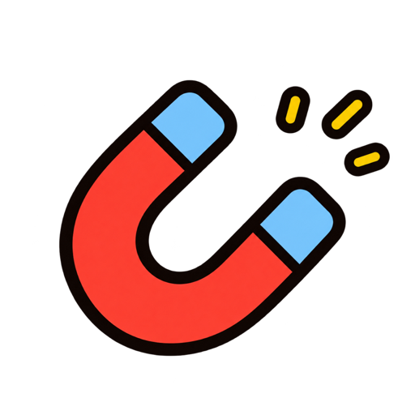
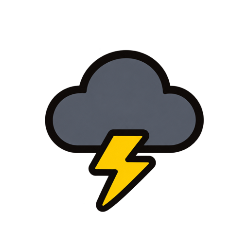

Ralentiza a un amigo.
Sus siguientes 200 pasos cuentan a la mitad, con una reducción máxima de 100 puntos.
 walkbop•
walkbop•Carreras semanales de pasos con amigos
Tus pasos reales se convierten en puntos para una competición nueva cada semana. Camina, sube puestos y vuelve a dar vida al chat del grupo.
TU CARRERA SEMANAL · SEMANA 44
LA PERSECUCIÓN
TÚ · #501 / LA CARRERA SEMANAL
WalkBop lee tu total semanal de pasos de Apple Health y lo convierte en puntos. La clasificación cambia cuando tus amigos se mueven, así que un paseo después de comer puede ser una decisión táctica.
La vista de persecución mantiene la carrera personal: muestra al amigo que tienes delante, la distancia entre ambos y lo que podría cambiar con un paseo más.
LA PERSECUCIÓN
POSICIÓN ACTUAL02 / EL GIRO
Sus siguientes 200 pasos cuentan a la mitad, con una reducción máxima de 100 puntos.
El Escudo permanece activo hasta bloquear un objeto negativo usado contra ti.
Tus próximos 500 pasos ganan un 50 % más de puntos, hasta un máximo de 250.

ImánRoba puntosCongelarCongela a un amigo
TormentaFrena al grupoDobleDuplica tus pasosPuñetazoHace retrocederUna jugada nueva cada 5.000 pasos
La carrera sigue dependiendo del movimiento. Los objetos añaden el caos justo para que un martes lento no decida toda la semana.
03 / TU PERSONAJE
Elige el rostro, el pelo y el estilo que encajan contigo. Tu personaje reacciona cuando subes, recibes un golpe o remontas, porque una carrera ajustada debería notarse en la cara.
TU CARRERAAMIGOS · ESTA SEMANA
04 / MEJOR JUNTOS
Invita a personas que conoces con un enlace privado de un solo uso que caduca después de 14 días. Cada amigo se une a la misma historia semanal: pequeñas ventajas, ataques sorpresa y el empujón final antes del reinicio.
05 / CONSTRUIDO ALREDEDOR DE TUS PASOS
WalkBop lee el total necesario para calcular tu puntuación semanal.
La app no añade ni modifica registros almacenados en Apple Health.
El servicio recibe tu total semanal para que funcionen posiciones y resultados entre participantes.
LA LÍNEA DE SALIDA ESTÁ MÁS CERCA